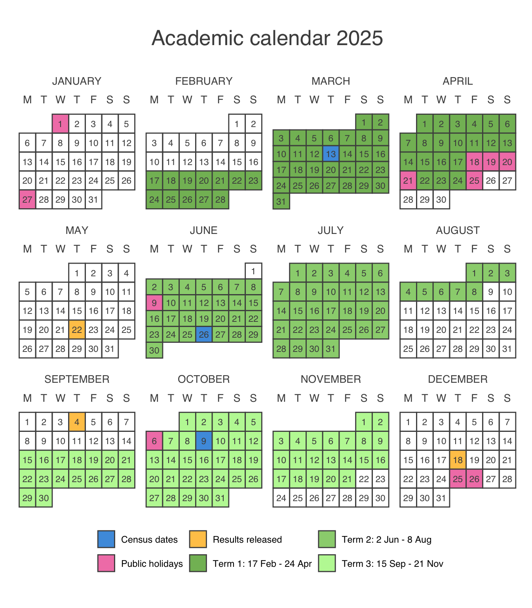

| Course | 2024 | ||||
|---|---|---|---|---|---|
| Term 1 | Term 2 | Term 3 | |||
| HDAT9000 | Clinical AI | ||||
| HDAT9100 | Context for Health Data Science | ||||
| HDAT9200 | Statistical Foundations for Health Data Science | ||||
| HDAT9300 | Computing for Health Data Science | ||||
| HDAT9400 | Data Management & Curation | ||||
| HDAT9500 | Machine Learning I | ||||
| HDAT9510 | Machine Learning II | ||||
| HDAT9600 | Statistical Modelling I | ||||
| HDAT9700 | Statistical Modelling II | ||||
| HDAT9800 | Visualisation & Communication | ||||
| HDAT9900 | Dissertation | ||||
| HDAT9910 | Capstone | ||||
Course schedule
2024 course schedule
Face-to-Face/Hybrid
Online
Online
More information can be found by searching for the relevant course online at timetable.unsw.edu.au
Key dates

More information on the academic calendar can be found online at student.unsw.edu.au/calendar